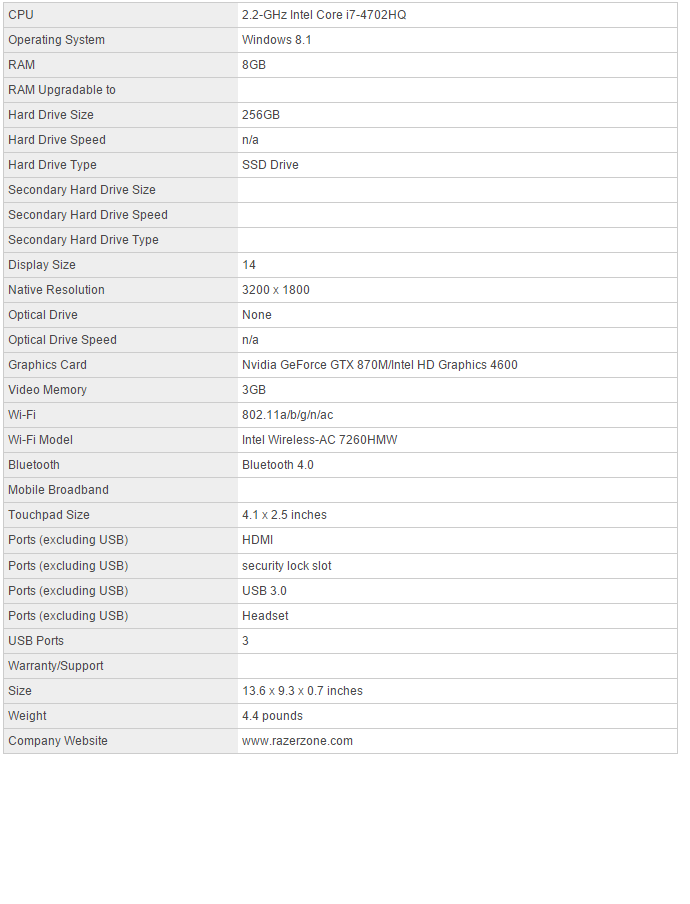
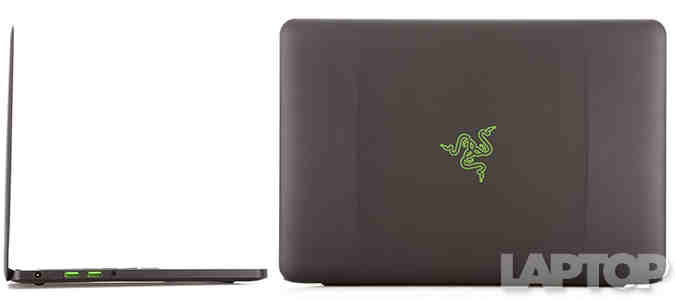
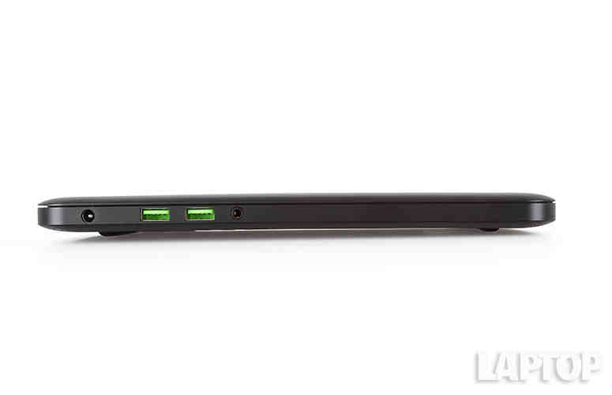
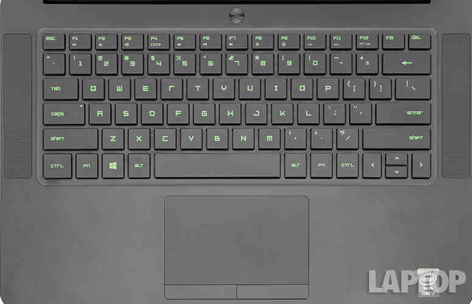
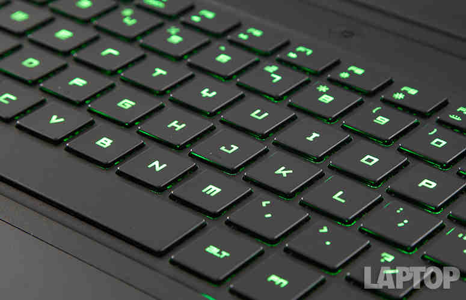

Laptop Lounge
Razer Blade 14

Editor's Rating:
The Pros
Portable, sexy design; Stunning, 3200 x 1800 display; Excellent overall and graphic performance; Comfortable keyboard
The Cons
Expensive; Runs incredibly hot; Below-average battery life.
Verdict
The Razer Blade 14 is comfortably seated at the intersection of portability and power, offering excellent graphics and gaming performance with an ultra-high-res display in a slim, lightweight chassis.
Specifications
Design
Whoever said "familiarity breeds contempt" surely has never laid eyes on the Blade 14. Three iterations later, the all-black aluminum chassis with the glowing, green tri-snake emblem continues to titillate. The subtle pair of lines running horizontally down the lid gives the impression of a sleek yet powerful luxury car, enticing you to put the key in the ignition. Vroom, vroom, baby. - See more at: http://www.laptopmag.com/reviews/laptops/razer-blade-14-2014#sthash.8KJI5YWD.dpuf
The interior is just as thrilling, with the familiar full-sized keyboard glowing an ethereal emerald green, nestled between a pair of speakers. A lone black power button sits serenely above the F7 button.

The Titan's rear and undercarriage are constructed from black magnesium alloy. The vents, designed to look like the rear end of a powerful muscle car, gave me visions of racing on a closed track at breakneck speed.
Make no mistake, the Titan is freaking huge. The 9.9-pound, 17.95 x 13 x 1.9-inch laptop makes the Origin Eon 17-S (8.6 pounds, 16.3 x 11.3 x 1.8 inches) and the Asus G751JY (9.2 pounds, 16.4 x 12.5 x 0.9~1.7 inches) look small by comparison.
Keyboard
They aren't mechanical keys, but I'll take them. The Blade's island-style keyboard offers firm, springy feedback. The key travel was measured at 1.4mm, which falls below the typical range of 1.5-2 mm. However, it takes 60 grams of force to press the keys down, which confirms the strong feedback I experienced. Because of the tactile feel, I hit 60 words per minute on the Ten Thumbs Typing test, which is higher than my usual 55 wpm.
The eerie, green, backlit keyboard is a showstopper, and I appreciated seeing the keys power down when not in use. You can customize the lighting to a small degree via the Razer Synapse 2.0, by setting the brightness level. It doesn't hold a candle to what you can do with an Alienware system, but it's something.
The 4.1 x 2.5-inch Synaptics touchpad is massive for such a petite notebook. And the bigger, the better. I had plenty of room to glide my fingers along the smooth, plastic surface, easily performing pinch-zoom, three-finger press and two-finger rotate. I had the same experience with Windows 8.1 gestures, swapping through open apps in smooth, seamless motion.
Display
Looking to quell complaints about the previous Blade's 1600 x 900 display, Razer put its money where its mouth is and outfitted the latest version with a 3200 x 1800 retina-like touch-screen panel. I was impressed by the screen's vivid color and crisp detail ... until I placed it next to my MacBook Pro 15 with Retina.
Despite the lower, 2880 x 1800 resolution, my 15-inch MacBook Pro with Retina beat the Blade on both fronts. When I looked at an image of an American bald eagle on both panels, the Blade delivered more-realistic hues, complete with white head-feathers flecked with subtle hints of gold and brown. However, my eye kept coming back to the MacBook with its borderline-oversaturated golds and browns. The tongue hanging out of the bird's disturbing maw was a fleshy pink.
The MacBook was the clear winner on details, delivering crisp definition between the individual feathers. The most impressive detail came in the tiny flecks we noticed in the bird's iris. These same details were present on the Blade, but some of the finer points of the image were not as clear.
Bottom Line
After three iterations, Razer continues to lead the charge on what a true portable gaming notebook should be. The $2,399 Blade 14 is a near-perfect merging of power and portability, delivering the sleek, sexy chassis I've come to know and love, with enough oomph to knock competitors on their arses. And the 3200 x 1800 display is a sight to behold.
However, the Razer Blad 14 suffers from searing temperatures, below-average battery life and a budget-demolishing price tag. For $1,699, you can get the MSI GS60 Ghost, which is lighter and runs cooler, but has a lower-resolution display, a less-attractive chassis and slightly-weaker performance overall. However if you have the money (along with an arm, leg and a firstborn) to spare, the Razer Blade 14 is the Ferrari of gaming notebooks: fast, sexy and just a little bit dangerous.